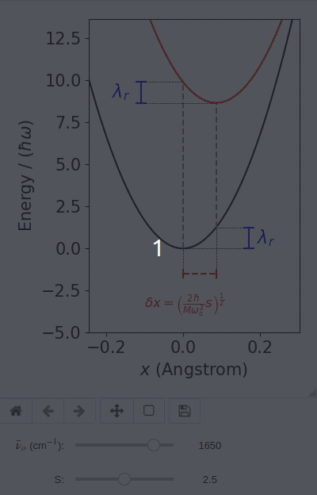

WARNING: Page is under revision. Please watch for typos!
What is a Huang-Rhys factor?
$\newcommand{\bra}[1]{\left \langle #1 \right |}$
$\newcommand{\ket}[1]{\left | #1 \right \rangle}$

The Huang-Rhys factor (usually denoted $s$ or $S$) is a unitless parameter that measures the coupling strength between electronic and vibrational transitions in absorption and fluorescence spectroscopy. Within the harmonic linear coupling model (described below), $s^2$ is proportional to the overall shift between the vibrational potential energy surfaces in the electronic ground and excited states. Larger values of $s$ produce stronger vibrational sidebands in absorption and fluorescence spectra because (due to the shift between ground and excited-state potentials) vertical electronic excitation leaves the system in a vibrationally excited state. For illustration, the animation nearby shows the variation of ground-state potential $V_0(x)$ (black curve) and excited-state vibrational potential $V_1(x)$ (red curve) as a function of the Huang-Rhys factor $s$. The parameter $\lambda_r$ labeled in the figure is the reorganization energy. The text below describes in detail the relationship between $s$ and the shape of these potentials in the linear coupling model.
Ground and Excited State Potentials
A simple model for a mixed electronic/vibrational system is the Hamiltonian
$$ H = \hat T_\text{vib} + V_0(x) \ket{0} \bra{0} + \left( \hbar \omega_\text{el} + V_1(x) \right) \ket{1}\bra{1}.$$
Here $\ket{0}$ represents the electronic ground state wavefunction, and $V_0(x)$ is the nuclear potential energy function for the vibrational coordinate $x$ in the ground electronic state. $\ket{1}$ and $V_1(x)$ are the corresponding quantities for the electronic excited state. $\hat T_\text{vib}$ is the vibrational kinetic energy Hamiltonian, which is the same for all electronic states.
Intuitively, the equation above indicates that when a molecule's electronic wavefunction jumps from the ground state $\ket{0}$ to the excited state $\ket{1}$, the potential energy surface for the nuclear coordinates also changes from $V_0(x)$ to $V_1(x)$. Physically, such changes can result from many factors; for example, if the vibrational coordinate $x$ corresponds to displacement along a keto C=O stretch mode, ground-vs-excited state changes to the electron density between the C and O atoms can alter both the *strength* of the C=O bond (i.e., the vibrational frequency) and the *length* of the C=O bond (i.e., the equilibrium position of the vibrational potential).
The Linear Coupling Approximation
A common approximation -- that works remarkably well for many molecular systems -- is to make two simplifying assumptions about the vibrational potentials:
- That both $V_0(x)$ and $V_1(x)$ are harmonic, and
- That the vibrational *frequency* is the same in the ground and excited states, i.e., that $V_0(x)$ and $V_1(x)$ have the same curvature.
If the vibrational coordinate $x$ corresponds to stretching a single chemical bond, this second assumption indicates that only the *length* of the bond changes upon electronic excitation.
Under these assumptions, the vibrational potentials can be written as
$$ V_0(x) = \frac{1}{2} M \omega_o^2 x^2 $$
$$ V_1(x) = \frac{1}{2} M \omega_o^2 \left (x - \delta x \right)^2 , $$
where $\omega_o$ is the vibrational frequency (the same in ground and excited states), and $\delta x$ is the shift in bond length between ground and excited states. This model is often referred to as the *linear coupling approximation* because the excited state potential can be expanded as
\begin{align}
V_1(x) &= \frac{1}{2} M \omega_o^2 \left (x^2 - 2 (\delta x) x + (\delta x)^2 \right) \\
&= V_0(x) + \frac{1}{2} M \omega_o^2 (\delta x)^2 - M \omega_o^2 (\delta x) x .
\end{align}
The excited-state vibrational potential $V_1(x)$ thus looks like the ground-state potential $V_0(x)$ up to a shift term that is *linear* in the vibrational coordinate $x$. Since in this form the $V_0(x)$ term contributes to the energy in *both* the ground state *and* the excited state, we can write the total Hamiltonian $H$ as
$$ H = \left( \hbar \omega_\text{el} + \frac{M \omega_o^2 (\delta x)^2}{2} \right) \ket{1}\bra{1} + \hat T_\text{vib} + V_0(x) - M \omega_o^2 (\delta x) x \ket{1}\bra{1}.$$
To simplify notation, it is convenient to regroup this last expression into three terms describing the electronic "system", a vibrational "bath", and a "system-bath" interaction:
$$ \hat H = \hat H_\text{S} + \hat H_\text{SB} + \hat H_\text{B}$$
with
$$ \hat H_\text{S} = \left( \hbar \omega_\text{el} + \frac{M \omega_o^2 (\delta x)^2}{2} \right) \ket{1}\bra{1} $$
$$ \hat H_\text{B} = \hat T_\text{vib} + V_0(x) $$
$$ \hat H_\text{SB} = - M \omega_o^2 (\delta x) x \ket{1}\bra{1} .$$
Here $\hat H_\text{S}$ operates only on the system states $\ket{1}$ and $\ket{0}$, $\hat H_\text{B}$ operates only on the vibrational (bath) coordinates $\hat x$ and $\hat p$, and $\hat H_\text{SB}$ operates on both system and bath.
## Normalized Coordinates ##
For further analysis, it is convenient to introduce a normalized set of coordinates via the definition
$$ Q \equiv \sqrt{M} x .$$
The Hamiltonian then becomes
$$ H = \left( \hbar \omega_\text{el} + \frac{\omega_o^2\left( \delta Q \right)^2}{2} \right) \ket{1}\bra{1} + \hat T_\text{vib} + \frac{\omega_o^2}{2} Q^2 - \omega_o^2 \left( \delta Q \right) Q \ket{1}\bra{1}, $$
where
$$\delta Q = \sqrt{M} \delta x .$$
The quantity $\delta Q$ in this last expression can be interpreted in two ways. On the one hand, we've seen that it is the displacement between the two PESs, expressed in normalized coordinates. On the other hand, if we split the Hamiltonian into "system", "bath", and "interaction" terms, $\delta Q$ serves as the coupling constant between system and bath:
$$ \hat H_\text{S} = \left( \hbar \omega_\text{el} + \frac{\omega_o^2 \left( \delta Q \right)^2 }{2} \right) \ket{1}\bra{1} $$
$$ \hat H_\text{B} = \hat T_\text{vib} + \frac{\omega_o^2}{2} Q^2 $$
$$ \hat H_\text{SB} = - \omega_o^2 \left ( \delta Q \right) Q \ket{1}\bra{1} .$$
The Huang-Rhys Factor and Reorganization Energy
In real-world measurements, the physical meaning of the normalized coordinate $Q$ is often obscure. For example, although we might *observe* a vibrational side band in the absorption spectrum of a polyatomic molecule, it's often completely unknown what sort of vibrational motion *gives rise* to them. For this reason, it's convenient to describe the interaction between electronic and vibrational coordinates in terms of parameters that are independent of the normal mode $Q$ itself. Two common choices for such parameters are the *reorganization energy* and the *Huang-Rhys factor*:
The **reorganization energy** is simply the overall shift of the energy of the $\ket{1}\bra{1}$ state in $\hat H_\text{S}$ due to electronic-vibrational interactions:
$$\lambda_r \equiv \frac{\omega_o^2 \left( \delta Q \right)^2 }{2} . $$
Physically, $\lambda_r$ represents the increase in *vertical transition energy* due to system-bath interactions. Here "vertical transition energy" means the energy required for the transition
$$ \begin{matrix}\text{Electronic ground state}\\ Q = 0\end{matrix} \to\begin{matrix}\text{Electronic excited state}\\ Q = 0\end{matrix} . $$
The **Huang-Rhys factor** is closely related, defined by simply dividing $\lambda_r$ by the energy $\hbar \omega_o$ of a single vibrational quantum:
$$ s \equiv \frac{\lambda_r}{\hbar \omega_o} . $$
Note that $s$ is dimensionless since $\lambda_r$ and $\hbar \omega_o$ both have units of energy. Since $s$ is simply the ratio of these two quantities, it tells us what *fraction* of a vibrational quantum is the reorganization energy $\lambda_r$. If $s = 0$, it means that there is no reorganization energy and, thus, no shift between the ground and excited state PES. Conversely, if $s$ is much larger than $1$, it indicates that $\lambda_r$ is much larger than the energy of one vibrational quantum and, thus, that a "vertical" electronic transition will land high in the excited-state vibrational PES, corresponding to a large shift between the two PES curves.
Equivalently, $s$ is sometimes described as an indicator for the horizontal shift between the two PES curves. But notice here that it is actually the *square root* of $s$ that is directly proportional to $\delta Q$ and $\delta x$, not $s$ itself since
$$ s \equiv \frac{\omega_o}{2\hbar} \left( \delta Q \right)^2 = \frac{M \omega_o}{2\hbar} \left( \delta x \right)^2 . $$
Whereas $\delta x$ and $\delta Q$ may be either positive or negative, $s$ is always positive.